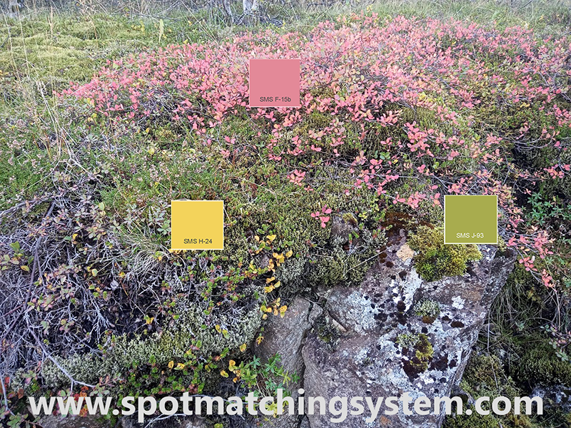
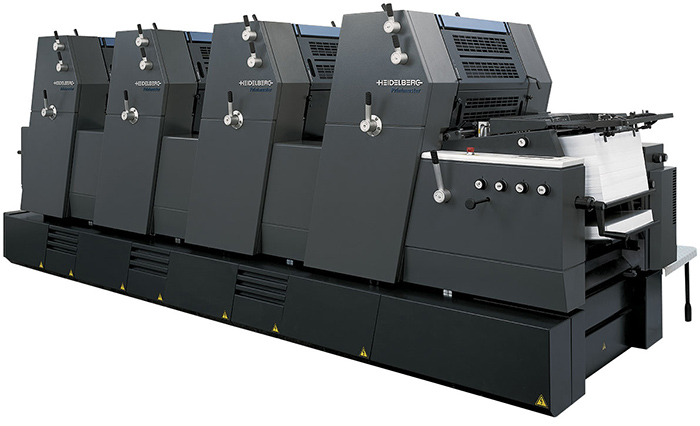
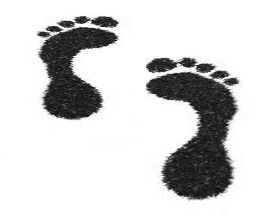

Shop SMS
SMS Technical
SMS products & services
SMS in articles and webinars
Testimonies
SMS news Interesting links SMS: How, why and when SMS Q&A
SMS for design and
advertising Getting started with SMS colours SMS BLOCKS Cost of ownership |
SMS for print Printers (in all categories) SMS READY - or not? |
SMS colours and the Environment

We like to refer to the more than 15.000 colours of the Spot Matching System as "natural", due to their cool subtleness, compared to many other colour systems/colour palettes - a bit like the colours of Iceland that are typically not very vibrant, but fascinating never the less - see picture here above from the Blue Lagoon.
But SMS colours don't just look natural.
They are in fact natural and using them actually helps reduce your carbon footprint!
According to studies by Dr. Kai Lankinen, who specializes in 7 colour process printing (SMS colours require only 4 colour process printing - CMYK), companies that use 7 colour process printing (CMYK+OGV) can expect to reduce the carbon footprint pr. print job by up to 51%! See https://www.insights4print.ceo/2023/10/ecg-brand-owners-want-it/.
According to our common sense, using 4 process colours will at least reduce your carbon footprint as much as if you used 7 process colours to make up your brand colours.
Spot Matching System for the circular Economy of the 21st Century
A circular economy is what everyone is aiming at these days and what environmentally concious companies and brand owners try to adapt to, to the extent possible.
Using the SMS colour palette in design for print instead of mixed spot
colours, means that in just about any city and town around the world you can find
Printshops that can print
your SMS colours correctly- in 4 colour printing / CMYK
- which means your printed items do not need to be transported a long
distance.
SMS colours can be reproduced in both analog and digital print shops that
print according to the universal print standard ISO 12647 (using icc
CMYK profiles such as ISO Coated 300, PSO Coated v3 or GRACol for
instance).
There is no need for Printshops to renew their printing presses to print SMS colours and no need to keep a special stock of special inks. They are seamlessly printed along with colour images in industry standard process CMYK whether you need to print one or a hundred SMS colours requires the same work and leaves the same carbon footprint.
We can also provide SMS CMYK colours adapted to custom icc CMYK profiles
that your local Printer may request.
In this case you simply need to send us a copy of the icc profile of
your Printer or their Adobe settings file and
we will provide you just the right CMYK combination for your SMS colour to be
correctly reproduced by your Printer.
4 colour printing presses are also used to print magazines and newspaper, so your SMS colours can be kept correct, just about wherever you need to print them, even at your small local Printer, - even on your own office Printer.
A total of 1.738 SMS colours can even be printed correctly in your local newspaper (ECO line).
The latest innovation and something that causes dramatic reduction of CO2e emmissions in textile manufacturing is that several companies are now offering digital process printing on textile / direct to garment.
All SMS colours, except our Extended Gamut colour palette, can be reproduced in inkjet printing on textile (Cotton and Polyester), as long as the print process is stable.
Despite digital printing becoming available for more and more applications, still some "real-world" applications/products such as for textile, plastic or metal printing/dying/painting/coating for instance, it is sometimes unavoidable to mix special inks, dyes, paints or coatings and in this scenario SMS colours can be cross-matched to other established matching systems suited for the respective category always maintaining the correct LAB value of the chosen SMS colour.

A 4 colour Heidelberg sheetfed printing press, quite common in offset Printshops around the world.
Increased quality control in print - a condition for printing of SMS colours
If you decide to use SMS colours for your brand, the Printshops you work with also need to be prepared to print those colours. We issue SMS READY badges to Printshops that are capable of committing to printing to strict production control. Such control requires qualified operators and in-house knowledge which has, based on research by for instance Ugra in Switzerland in relation with their PSO certification program (www.ugra.ch) reduces considerably the number of print jobs that need to be reprinted due to mistakes in prepress or the pressroom itself, reduced number of virgin paper needed for each make-ready of a print job, both of which contribute to the circular environment and reduced carbon footprint.
In short: By setting strict standards in printing of our SMS colours we contribute to, not only more colour consistency in print, happier Printers and happier customers and less problems in the print value chain, but in fact also to lowering the carbon footprint of each SMS READY Printer through strict process control to ISO standards.
Washing agents for each individual spot ink you use
Defining your brand colours with old school spot colours means that in analog print shops the printer has to wash a press unit for each and every of your special colours with strong chemicals, to mix a special ink just for you and to put that ink on a separate unit of the press. This tedious and time consuming process increases your carbon footprint and it also adds to your cost for printing each job, - the more mixed spot colours, the higher the cost.
When you choose SMS colours to represent your brand and for your designs and artwork, there is no need for printers to wash their printing press or mix special inks.
If you use SMS for your brand, you can use as many SMS spot colours you like for your
jobs without adding to your carbon footprint or your cost for printing the job
Transport, CO2e (CO2 equivalent / green house gases)
Defining your master brand colours by mixed spot colours seriously limits the number of print shops you can go to, which often means that you cannot just go to your neighborhood print shop to order your print jobs.
The fact is that in too many cases customers even end up ordering print jobs from abroad, which increases the combined carbon footprint of their printed products considerably.
In the light of the ever increasing number of digital print shops
worldwide, it is worth mentioning that defining your master brand colours
using colour systems that are made from mixed spot colours means that often they simply cannot be printed
correctly at digital printshops.
You need to go to an analog printshop for your prints in that case - or
just accept that your colours will not be correctly reproduced, - which
is often the case.
By using SMS colours as master brand colours, Brand Owners can order a large portion of their annual printed material from their local Printer and even print their own office and marketing material at the office on a digital RGB desktop printer. SMS users can already order SMS READY media and SMS READY printer profiles for a number of reasonably priced desktop printers, ensuring perfect SMS colours - even more correct than most professional print shops could ever offer. Such a setup is obviously also perfect to print out SMS colour proofs.
In the case of other colour systems than SMS, the user (Brand Owner, Designer, Printer) typically needs to buy expensive colour guides that show ALL the colours of each system, that are printed on analog printing presses and shipped across the world to their users by flight usually. Those guides need to be renewed every 12 months, otherwise the colours will no longer be correct (due to fading of inks and paper).
For only 90 Euros per SMS colour palette (v6, 1,738 colours each) licensed SMS users can pick out their SMS colours on just about any digital display - even on their smartphone or tablet to get a very good idea of what the colour(s) will look like when printed - on coated or uncoated paper.
A Designer does not have to buy a printed SMS colour guide to create a new logo or a new design. In fact, we stopped offering printed SMS colour guides years ago.
He or she can (and should) work with the sRGB web version of the SMS colours right until the minute the colours need to be printed. He or she can email a digital proof of the SMS colours to their customer for approval on their smartphone, tablet or generic sRGB screen and when it is time to finally print the SMS colours, the customer simply converts the job to CMYK and sends it to the printer in PDF format.

If a printed colour proof of the SMS colours is requested - either by the brand owner or by the Printer, the SMS colours can be proofed by any proofing facility nearby that has a proofing device with an inline measurement device and software capable of proofing according to ISO 12647-7-2016. SMS colour tickets (see image here above) can optionally be ordered from Spot-Nordic.
Uncoated paper v.s. coated paper
Uncoated marketing material gives the instant impression of the company being environmentally concious, due to the natural look and feel of uncoated paper, compared to glossy coated paper.
But like SMS colours, it is not just about look and feel. Using uncoated paper is actually better for the environment.
Uncoated papers are likely to be less expensive than most coated papers, except for very large volumes.
Coated paper is most vibrant for 4-colour processes, but uncoated papers can be very effective, too, especially when the project layout is well-designed and geared toward the strengths of the particular paper you've chosen.
Uncoated papers are a more environmental choice because they yield a
higher percentage of fiber for recycling.
Not only do coated papers yield less fiber for the same weight (and
therefore are rejected by many mills for recycling), but the clay
coating also creates a greater amount of sludge that must be disposed of
(see further information at
http://www.conservatree.org/paper/Choose/Paper4Project.shtml).
SMS colours, both our Standard colours and our ECO colours are perfectly achievable on white, uncoated paper so brand owners and designers no longer have to hesitate in using uncoated paper, for the sake of their brand colours.
Our SMS ECO colours are in fact suited for printing on off-white paper, - perfect for even 100% recycled, uncoated paper and even for standard newspaper printing according to WAN-IFRA (to ISO 12647-3-2013 standards).
Think globally, Print locally
Based on the above points, we hope you are by now convinced that Brand Owners that decide to switch to using SMS colours - for their logo and for their marketing, are in fact minimizing their carbon footprint and leading by example that anyone can actually SEE.
By becoming SMS READY, each Printer, each designer and each Brand Owner, even the smallest of companies, is in fact stating that they are doing their part to help our planet - by simply using Eco friendly SMS colours.
If you are ready to switch to SMS or are at least willing to consider it, please contact support@spotmatchingsystem.com and we will be happy to assist you or vist our webshop and order the SMS products you want.
Since our natural SMS spot colours can be correctly reproduced in even the most modest of print shops - even in your own office, you can benefit your community by having your small local printer print your jobs with flying (SMS) colours, with their current equipment and machinary, achieving your SMS brand colours consistently everytime.
Keeping jobs in your local community or at least within your country is important and something that socially responsible Brand Owners try to do, whenever possible. In general, if the prices from your local Printer seem too high compared to large international Printers, it is probably because not enough local companies are having their jobs printed locally.
Each print job that is printed locally rather than being sent and shipped from overseas contributes to sustaining and growing your local economy, while reducing your carbon footprint.

Reduce your carbon footprint, - one colour at the time!
Shop SMS SMS Technical SMS products & services SMS in articles and webinars
SMS and the environment SMS news Interesting links SMS: How, why and when SMS Q&A
|
SMS for design and
advertising Getting started with SMS colours SMS BLOCKS |
SMS for print Printers (in all categories) SMS test forms |